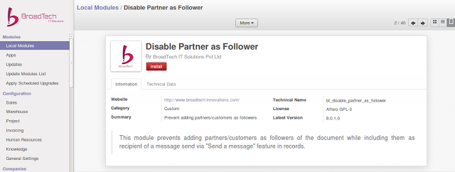

<section class="oe_container oe_dark">
    <div class="oe_row oe_spaced">
        <h2 class="oe_slogan">Disable Adding Partner as Follower</h2>
        <div class="oe_span12 oe_spaced" style="text-align:justify;">
            <p class='oe_mt32'>
While using the "Send a message" feature in Odoo records, every recipient of the message automatically becomes follower of the record,if they are not followers already. 
Becoming a follower means the recipients of the email, especially customer, subscribes to the document automatically. Such a subscription can be a challenge in terms of the privacy of the sales team and the company when it comes to sale and invoice records.
The internal communications between the sales team will become available to the customer as well. 
            </p>
            </div>
        <div class="oe_span12">
	        <div class="oe_row_img oe_centered">
	            
	        </div>
        </div>
       
    	  <div class="oe_span12 oe_spaced" style="text-align:justify;">
            <p class='oe_mt32 '>
This app from <strong><a href="http://www.broadtech-innovations.com/">BroadTech IT Solutions</a></strong> prevents adding recipients(Partner/Customer) as followers of a record while sending the message, which effectively stops auto subscription.            </p>
            </div>
    <p class='oe_mt32 oe_spaced'>
    For any assistance please feel free to contact us: contact@broadtech-innovations.com
     </p>
        
       
    </div>
</section>
